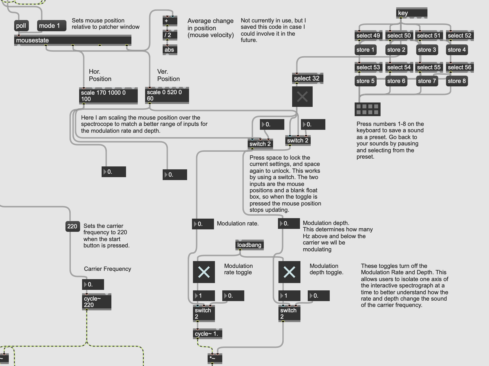
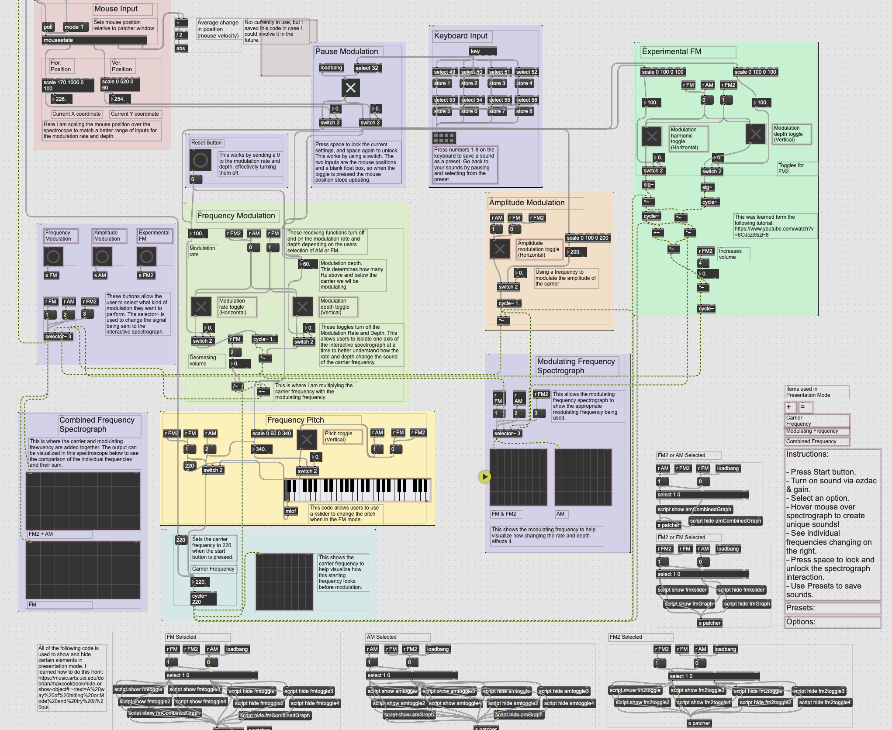

Sound Synthesis
Spring 2024
Introduction
This was a project that I completed on my own for a sound design class over the course of several weeks. The goal was to create a patch in Max that explores class concepts in a unique way. I created an AM and FM synthesis instrument that doubles as a way to teach the concepts by using a spectrograph to show how your interaction with the instrument changes the sound waves you create.
The following video demonstrates the functionality of my final project:
Process
Because sound synthesis and working in Max was very new to me, I started this project by doing research. A video that I found that really inspired me was a tutorial for AM and FM synthesis. Following this tutorial, I knew I wanted to explore this concept further in my own project. To see the original tutorial, click here →.
While this tutorial helped me understand AM/FM synthesis a lot, I felt like I still had questions. I am a very visual learner, so it seemed natural to me to find a way to explore this kind of synthesis while watching a spectrograph to see how all of the different wave forms were changing and influencing each other.
I also wanted to involve interaction in my patch. I wanted an interaction that was more intuitive and engaging than pressing keys on a keyboard. For this reason I focused on mouse interaction.
With these two ideas combined, I created an interactive spectrograph where the X and Y axes allow you to modify the two frequencies being combined in your AM or FM synthesis. The first draft of my project was very simple. Below is a screenshot of most of my code in Max that captures the mouse input and has the option for AM and FM synthesis.
{kind=link}
My final patch had a lot more functionality. The user can pick between AM, FM, and a more experimental and wild version of FM to explore more sounds.
{kind=link}
I also allowed people to pause the spectrograph to give them more control. Users can also press keys 1-8 to save a specific sound that they liked. I also added a mini digital keyboard (the kslider element) to allow users to select the pitch of their modulating frequency when in FM mode. This also helped give users more control over their sound exploration.
{kind=link}
{kind=link}
Challenges
One challenge I faced in this project was balancing simplicity and complexity. I was worried about my patch not being complex enough, but I also didn’t want to add unnecessary features that felt like they didn’t belong. In the end I think I found a good balance of features that added complexity without compromising the core idea behind the project.
Reflection
Overall, I am very proud of what I created in this class. Exploring sound has been a very tempting but also very daunting thing for me, so I am glad to have had the opportunity to learn Max and feel more confident in my ability to work with sound. I would love to continue working withs sound in the future, and I really want to explore other visual coding programs as I found the process of working with Max to be very intuitive and rewarding.